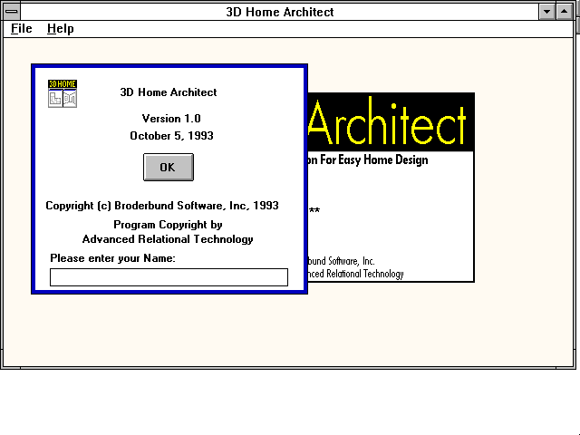
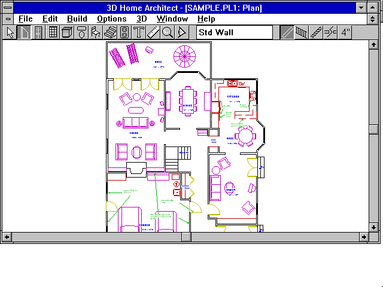
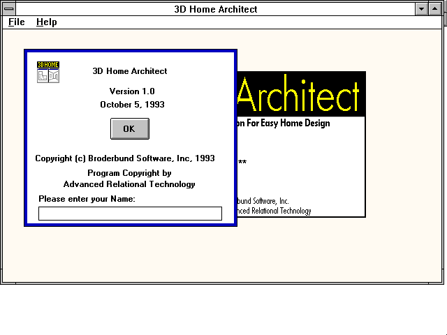
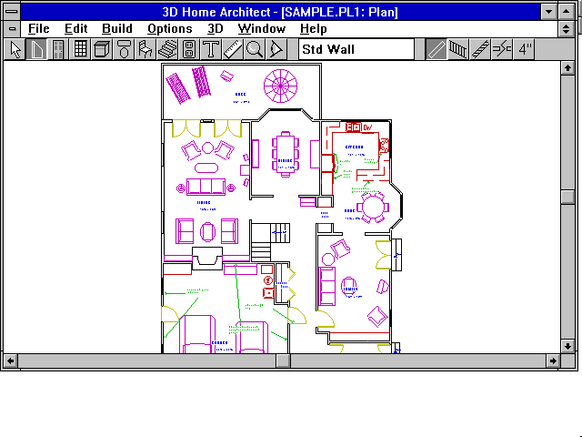


2005.05.10.
can you recommend some blogs with old laptop pictures?

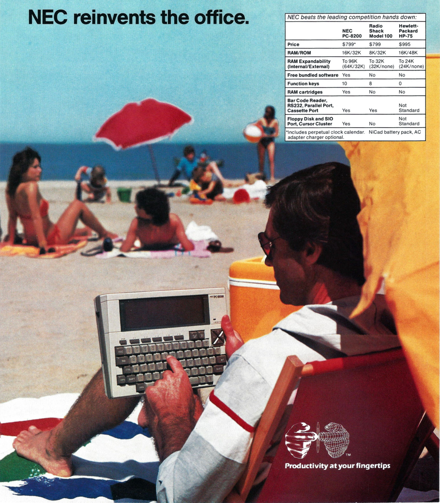
NEC PC-8201a (1983)


Windows 95 - File System Properties - CD-ROM
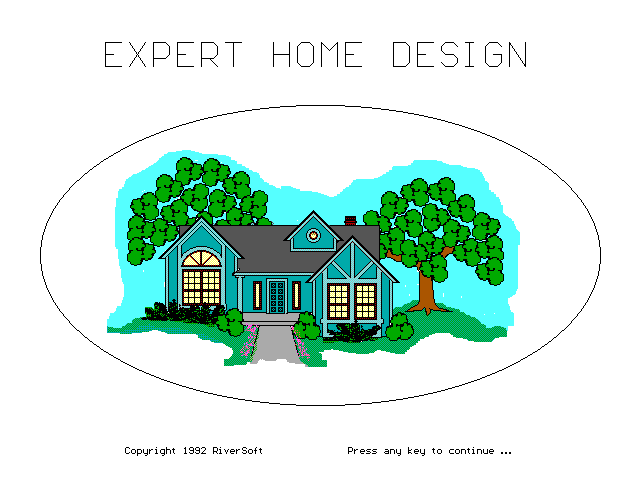
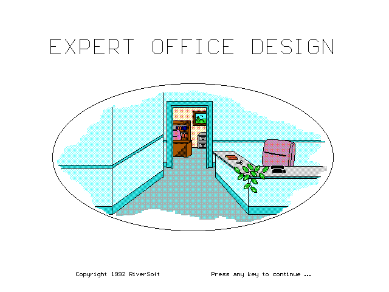
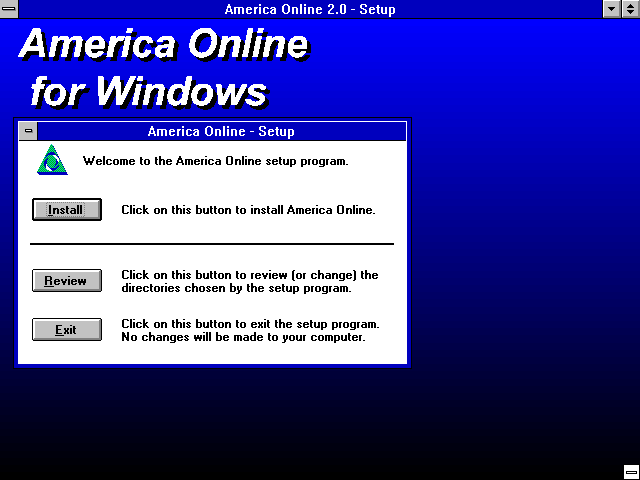
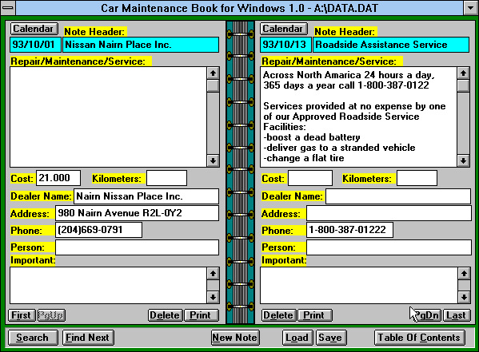

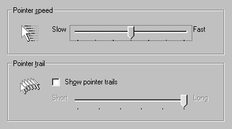
Windows 95 - Mouse Properties - Motion

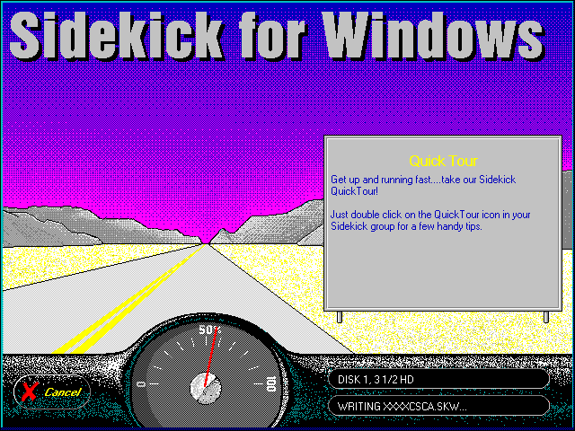
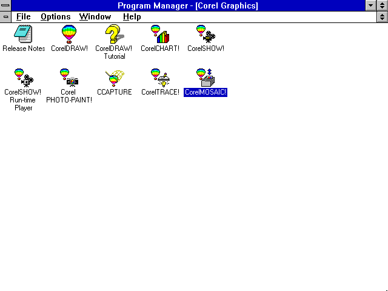


old geocities/angelfire site backgrounds

Windows XP - Display Properties